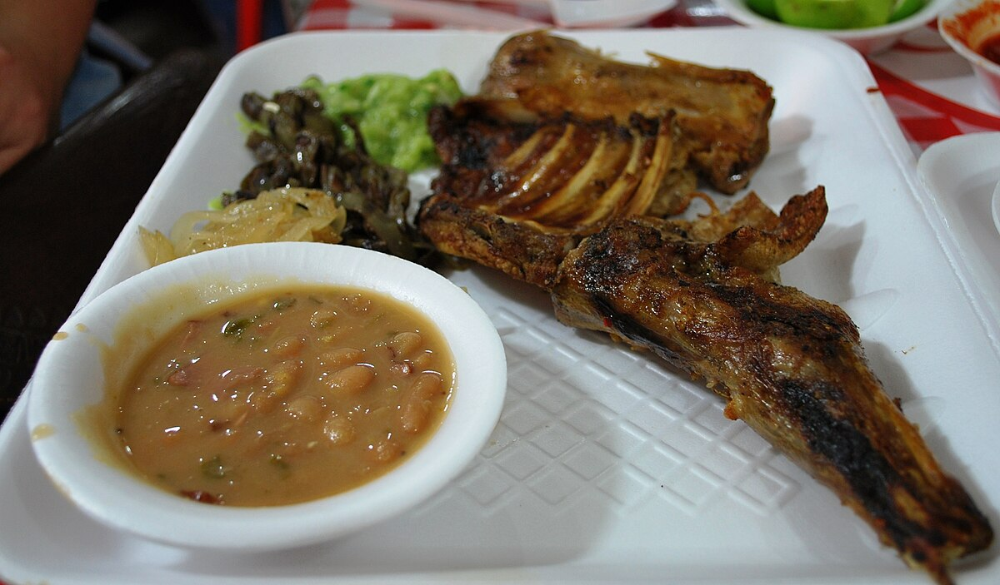
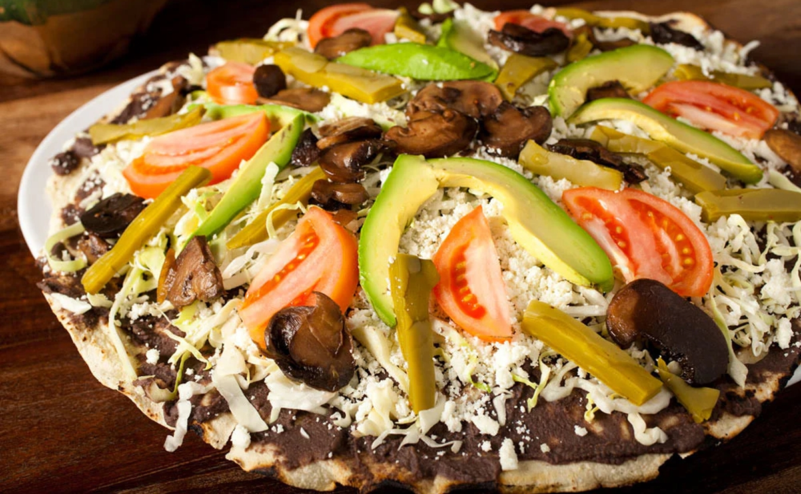

Platillos representativos
Una muestra de la riqueza culinaria que acompaña cada viaje.

Cabrito al horno
Emblema del norte, cocinado lentamente al horno.
Allende, Nuevo León
Chiles en nogada
Platillo barroco y festivo, relleno de picadillo y cubierto con salsa de nuez, granada y perejil.
Puebla

Tlayuda oaxaqueña
Tortilla crujiente con asiento, frijoles, tasajo y quesillo: una explosión de sabor y textura.
Oaxaca
Aguachile
Mariscos frescos bañados en chile, limón y cilantro. Refrescante y picante, ideal para la costa.
Puerto Vallarta
Pan de muerto
Más que un pan, es un símbolo de tradición y memoria. Azucarado, suave y lleno de significado.
México (portada)